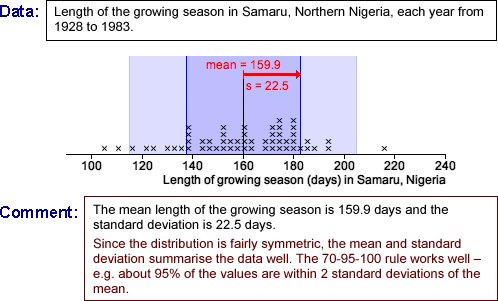

Symmetric distributions

Hours of sunshine in Gaborone (skew distribution)
Explain that the 70-95-100 rule of thumb works reasonably well for the four symmetric distributions — about 70% of values are within s of the mean (darker blue band), about 95% are within 2s of the mean (lighter blue) and all values are within 3s of the mean.
Although the standard deviation is still a valid description of the spread of values for the skew distribution, the mean and standard deviation give no indication of the skewness of the data. Considerably more than 70% of the values are within s of the mean and none are more than s above it. (However about 95% are still within 2s of the mean.)
Notes about the four data sets that are reasonably symmetric are provided above their dot plots.
The skew distribution arises from a study about the potential use of solar cookers in Gabarone, Botswana. The number of hours of sunshine is critically important to the viability of these solar cookers as an alternative to traditional cooking with charcoal.